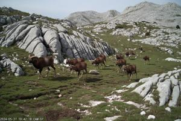

Доброгощи Дубри

Доброгощи Дубри (згур. Dobrogosczi Dubri, дегл. Dobrogoŝi Dubri, глаг. ⰄⰑⰁⰓⰑⰃⰑⰛⰊ ⰄⰖⰁⰓⰊ) — лесистый карстовый район в западной части гор Нехожи Врехи в Бывшей Верхней Паннонии. Он занимает около 220 кв. км близ границ со Словенией и Хорватией. Название, буквально означающее «Гостеприимные леса», — пример суеверного эвфемизма; в действительности эти леса почти непроходимы и смертельно опасны для неопытного путешественника.
Природа
Геология и климат

Горы в этом регионе сложены из известняка, подверженного экстремальному карстованию. Сплошной почвенный покров здесь отсутствует. Поверхность представляет собой хаотичное чередование глубоких провалов и шкрапов (карров) — выветренных, острых как бритва каменных гребней. Полезный субстрат (красная глина «терра росса» и лесной перегной) не задерживается на поверхности: дожди смывают его в глубокие скальные трещины и на дно карстовых колодцев.
Главная гидрологическая особенность региона — полное отсутствие поверхностных вод. Из-за пористости известняка все выпадающие осадки сразу просачиваются глубоко под землю. Вместо ручьев, рек и озер вода формирует разветвленную, недоступную с поверхности сеть подземных водотоков, сифонов и гигантских пещерных галерей. Эти водотоки выходят на поверхность ниже карстового пояса в виде бесчисленных родников, которые, сливаясь в один поток в Глажицкой долине, дают начало Южной Драве — главной реке Верхней Паннонии.

Нехожи Врехи служат барьером на пути влажных воздушных масс с Адриатического моря, что обеспечивает высокий уровень осадков. Климат здесь исключительно сырой, сравнимый по объемам выпадающей воды с тропическими лесами. Микроклимат крайне неоднороден из-за изломанного рельефа. Карстовые воронки работают как ловушки для тяжелого холодного воздуха, образуя так называемые «морозные ямы». Перепад температур между краем воронки и ее дном на дистанции в несколько десятков метров может достигать 10–15 °C. На дне глубоких впадин часто стоят ледяные туманы, а снег в их тени может лежать до середины лета.
Растительный мир
{kind=link}
Несмотря на скудость почвенного покрова, Доброгощи Дубри покрыты густым, реликтовым высокоствольным лесом преимущественно из буков, елей и пихт. Этот лес уцелел благодаря рельефу, сделавшему лесозаготовку и выпас скота физически невозможными.
Деревья выживают на камне благодаря эффекту «цветочного горшка»: они укореняются не на поверхности, а пускают корни глубоко в трещины, забитые влажной глиной и перегноем. Корни-клинья проникают в микроскопические щели, утолщаются и создают гидравлическое давление, способное раскалывать многотонные монолитные глыбы. Уходящие на метры вглубь расщелин, они постоянно омываются влажным пещерным конденсатом, поднимающимся из подземных пустот. Широкие поверхностные корни плотно оплетают выступающие скалы, удерживая массивные стволы от падения.
Подлесок отличается густотой. В местах, где кроны старых буков и пихт пропускают свет, пустоты между шкрапами заполнены непролазными зарослями стелющегося можжевельника, ежевики и волчьего лыка. Травяной ярус представлен жёсткими, адаптированными к недостатку почвенной влаги злаками и гигантскими папоротниками, чьи раскидистые листья скрывают истинный масштаб каменных провалов. Влажные, затенённые стены глубоких воронок и устья колодцев покрыты плотным скользким слоем печёночных мхов.
Выше лесного пояса узкая полоса альпийских лугов извивается вдоль гребня Нехожих Врехов. Луга здесь непохожи на сплошной зелёный ковёр: жёсткие злаки, осока и низкорослые горные травы растут мозаикой, цепляясь за скудную почву в углублениях между голыми известняковыми гребнями.
Животный мир

Мелкая фауна региона представлена животными, способными перемещаться по хаотичному нагромождению камней. Среди шкрапов и вывернутых корней гнездятся каменные куницы, лесные коты и различные виды грызунов (сони, полёвки), находящие укрытие в бесчисленных скальных щелях. Из-за сырости и обилия мхов здесь много амфибий: саламандр и жаб, которые никогда не отходят далеко от влажных трещин.
Исключительно богата троглобионтная (пещерная) фауна: в разветвленных подземных системах обитают эндемичные виды слепых земноводных, ракообразных и гигантские колонии летучих мышей.
Крайняя труднодоступность делает этот район идеальным убежищем для зверей, избегающих человека. Несмотря на экстремальный рельеф, здесь существуют стабильные популяции крупных млекопитающих, чьё поведение жёстко подчинено карстовой геологии.

Главным хозяином Доброгощих Дубрей является бурый медведь. Вопреки кажущейся неповоротливости, медведи используют свои длинные когти как альпинистские крючья, легко преодолевая шершавые известняковые склоны, а обилие сухих пещер и скальных ниш обеспечивает им идеальные укрытия для зимней спячки. Копытные, напротив, ограничены в передвижениях. Дикие кабаны и европейские косули редко рискуют выходить на изрезанные шкрапами участки; их жизнь протекает на дне обширных карстовых воронок. Именно туда смывается мягкая глина и скатываются буковые орехи, позволяя кабанам рыть землю в поисках пропитания. Лесные копытные живут на дне таких воронок, как в природных загонах, переходя в соседние только по набитым безопасным тропам.

Хищники, такие как рыси и немногочисленные стаи лесных волков, адаптировали свою охоту под ландшафт. Волки здесь не устраивают долгих изматывающих погонь; их тактика — загнать косулю в ловушку, оттеснив жертву к отвесному краю карстового колодца или в тупик из непроходимого бурелома, где она лишается маневренности или ломает ноги. Волки здесь легче и мельче своих равнинных собратьев, а их подушечки лап со временем грубеют, превращаясь в жесткие мозоли, устойчивые к порезам об известняк.
{kind=link}

Выше лесного яруса, на альпийских лугах, встречаются горные серны, а также динарский муфлон — реликтовый подвид дикого барана; это единственное в континентальной Европе место их обитания. Рельеф здесь так же изрезан и труднопроходим, но местность открыта, что дает копытным огромное преимущество: превосходный обзор защищает их от внезапных атак хищников. Кроме того, на этих высотах в глубоких карстовых воронках снег может лежать до конца лета, обеспечивая серн и муфлонов талой водой.
И всё же выживание крупных зверей без рек требует особой адаптации. Олени, медведи и кабаны используют краткосрочное «окно» водопоя: во время и сразу после мощных ливней они пьют из так называемых камениц — естественных чаш, выдолбленных водой в известняке, которые удерживают влагу всего несколько часов до ее полного испарения или ухода вглубь. В периоды засухи звери протаптывают тропы на дно самых обширных и пологих воронок к редким пещерам-сифонам. В ландшафте, где человек практически не угрожает крупным животным, именно скудость доступных водных источников служит главным ограничителем их численности.
Доброгощи Дубри и человек
Опасности

Для человека Доброгощи Дубри представляют собой природную полосу препятствий, таящую множество смертельных угроз. Передвижение по скрытым под листвой острым шкрапам быстро разрезает даже крепкую обувь, а постоянная необходимость спускаться и подниматься по осыпающимся стенам воронок приводит к тяжелым травмам суставов.
Глубокие карстовые щели и устья вертикальных шахт (поноры) часто полностью зарастают сплошным ковром мха, папоротников или засыпаются многолетним слоем гниющего валежника и листвы. Наступив на такой участок — моховой капкан, — человек рискует провалиться на десятки метров под землю или намертво заклинить ногу в сужающейся трещине.
Отсутствие привычного шума наземных ручьев и сложная геометрия карстовых воронок лишают путника ориентации. Звуки шагов вязнут во влажных мхах, а крик о помощи многократно и хаотично отражается от каменных стен, искажая направление звука и дезориентируя спасателей.
Всякий посетитель Доброгощих Дубрей через некоторое время замечает, что за ним на безопасном расстоянии следует стая волков. Они никогда не нападают. Они следят и ждут, пока человек куда-нибудь не провалится, не застрянет, не сломает ногу. И нередко дожидаются.
Мифология и фольклор

Среди жителей окрестных долин Доброгощи Дубри всегда пользовались репутацией места, откуда не возвращаются, и были овеяны множеством мрачных легенд. В дохристианские времена эти леса считались священными. Судя по сохранившимся пещерным росписям и археологическим находкам, здесь практиковался культ божества с телом человека и головой муфлона, вероятно, местной разновидности греческого Пана или кельтского Кернунна. Согласно «Житию св. Тибора», именно здесь, в Глажицкой долине, на границе лесов, этот святой повстречал фавна и осенил крестным знамением, после чего у фавна выпала шерсть и отвалились рога; вероятно, эта легенда отражает борьбу католической церкви с остатками языческих культов в раннем средневековье.
Позднейшие поверья населили Дубри всевозможными разновидностями нечистой силы. Помимо общебалканских волкодлаков (волков-оборотней) и караконджулов (фавнообразных гибридов), здесь в пещерах водятся змиевилы (змеерусалки), заманивающие путников в поноры сиреньим пением, и лелики (летучие мыши-оборотни), являющиеся в ночных кошмарах и похищающие людей из мира яви в мир снов.
Глажичане

Все окрестные жители избегали Дубрей, за исключением небольшой группы глажичан, обитателей двух сёл в Глажицкой долине — Старой и Новой Глажицы. У этих общин охота в Дубрях традиционно служила вспомогательным средством пропитания и обрядом инициации. Отцы показывали сыновьям удобные тропы, учили правилам передвижения по лесу и повадкам зверей, а потом юноша переходил в разряд мужчин, сходив в лес в одиночку и вернувшись со своей первой добычей.
Из-за такого близкого знакомства с «нечистым» лесом сами глажичане считались у других местных крестьян чем-то вроде нечисти, их чурались, и с ними не заключали браков. Новейшие генетические исследования показали, что современные глажичане (всего осталось около 200 человек) тысячелетиями пребывали в изоляции и сохранили почти в неприкосновенности генофонд доиндоевропейских земледельцев Европы; они и внешне отличаются от окрестного населения меньшим ростом и более тёмной пигментацией кожи, глаз и волос. Глажичане говорят на том же паннонском (славянском) языке, что и остальное население региона, но сохранили много уникальных терминов, вероятно, неиндоевропейского происхождения, для специфических особенностей местного рельефа (разных видов карстовых провалов, пещер и т.д.).
История и современный статус
Со средних веков и до 1946 года Доброгощи Дубри, включая обе Глажицы и другие окрестные сёла, числились владением баронов Зорза, чей замок Зоржин расположен на восточной границе лесов. Их природа и мифология увековечены в стихах Бранко Дундулича — балладе «Змиевила» и лирическом стихотворении «Доброгощи Дубри» о его собственном походе по лесам с проводником-глажичанином. Коммунистическое правительство национализировало Дубри и объявило их заповедником. Этот статус формально сохраняется до сих пор. Фактически территория не охраняется, но в охране и нет нужды.
По хребту Нехожих Врехов проходит граница с Хорватией и Словенией. Даже в поздние годы правления Гоубки, когда все остальные границы страны тщательно охранялись и были оборудованы разнообразными защитными сооружениями, этот участок оставался пустым; пограничники только облетали его на вертолётах для наблюдения. Судя по рассекреченным после 1990 года документам, ни одного случая нарушения границы на этом отрезке отмечено не было. В настоящее время граница остаётся необорудованной, никаких пограничных застав и переходов нет.
Внутри Бывшей Верхней Паннонии Доброгощи Дубри граничат с Деглянской Республикой на востоке и со Згурской Республикой на севере. Глажицкая долина, бывшая местом боевых действий в 1994-1995 гг., в настоящее время контролируется Деглянской Республикой. Сами леса никем не контролируются, ни одна из сторон не предъявляет на них территориальных претензий.